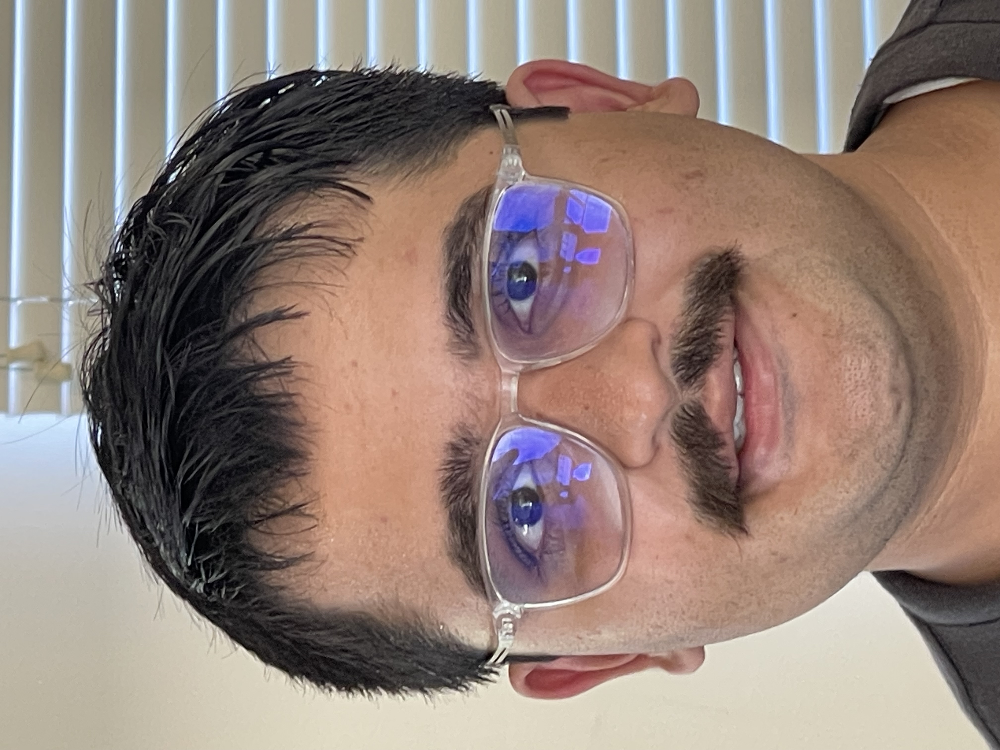

Project 0: Becoming Friends with Your Camera
Course:
CS180/CS280A ·
Student:
Mansoor Mamnoon ·
Due:
Sept 2, 2025 11:59 PM
Part 1: Selfie – Wrong vs Right
Close-up (wide):
Typical distorted selfie.

Step back + zoom in:
Same face size, better perspective.
Part 2: Architectural Perspective Compression
Telephoto:
Flattened/compressed look.
Wide & closer:
Stronger depth cues.
Part 3: Dolly Zoom (Animated)
Move camera back while zooming in (subject size roughly constant).